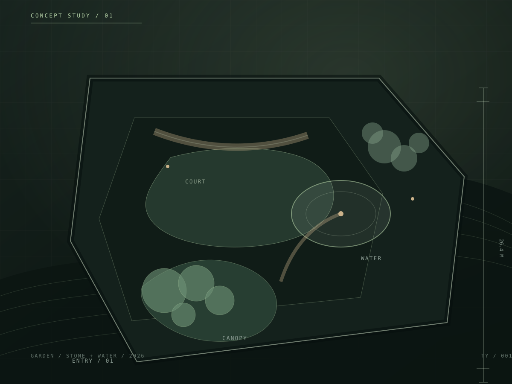
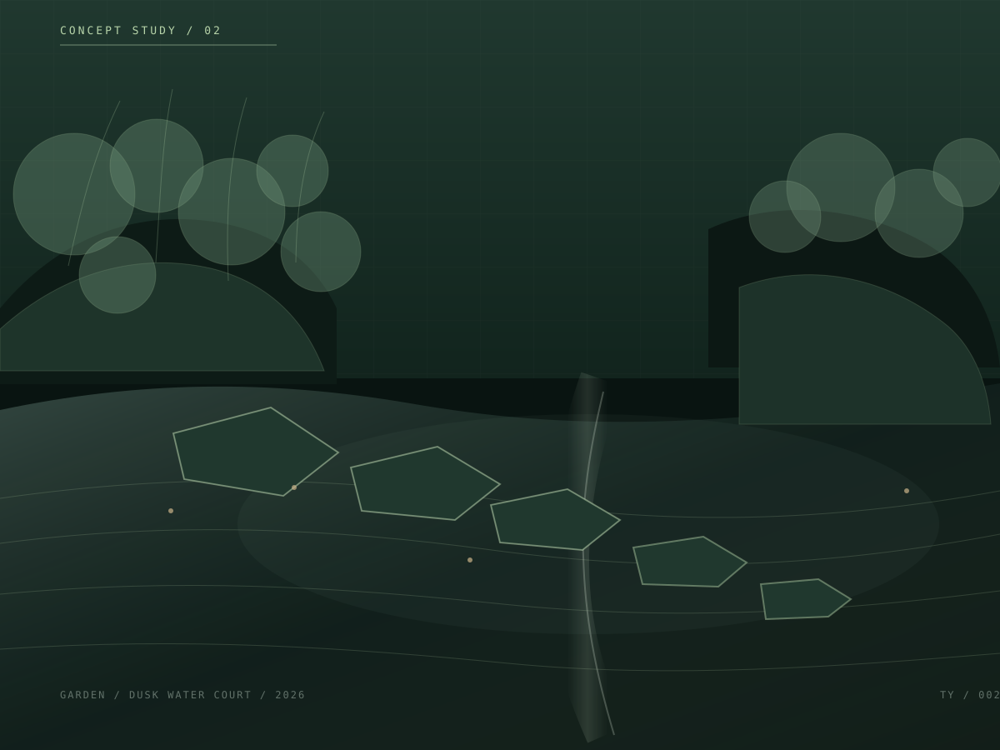
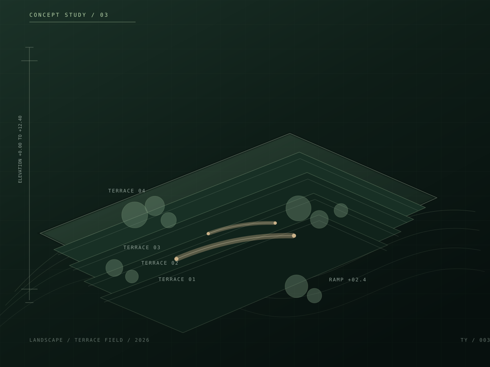
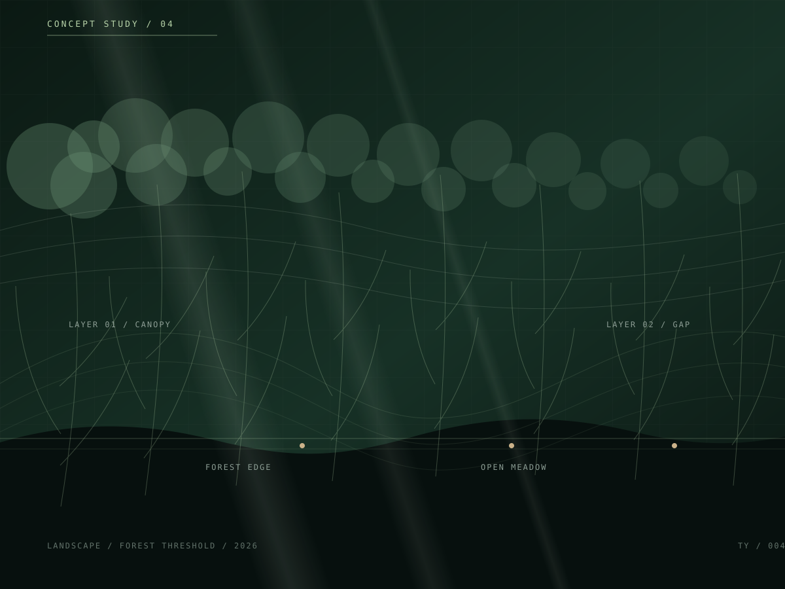
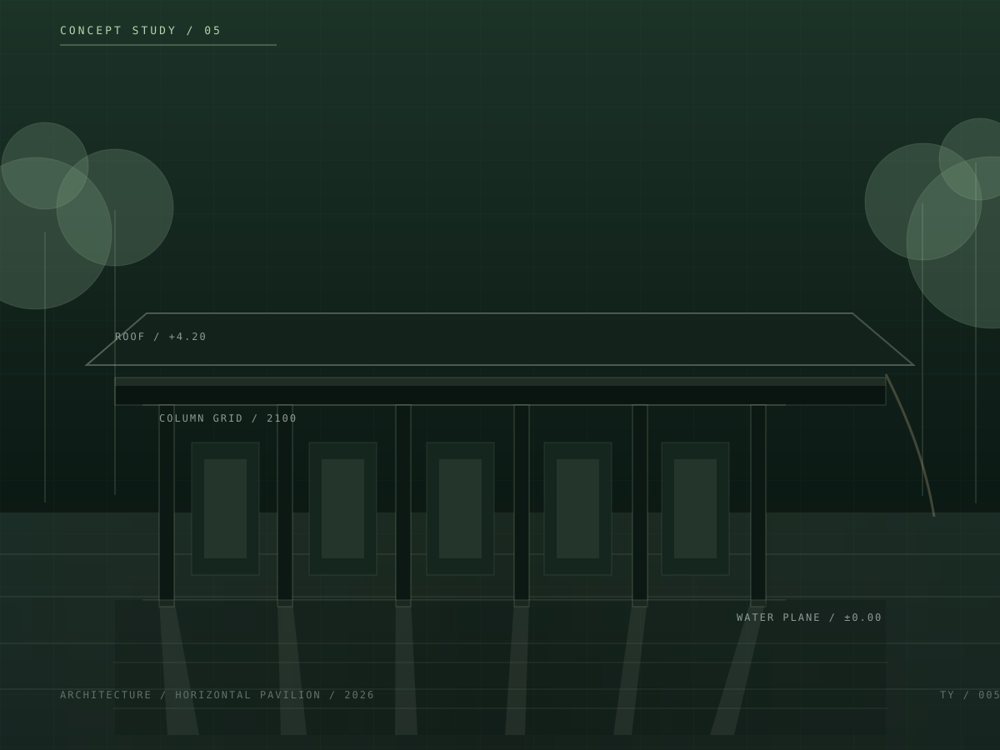
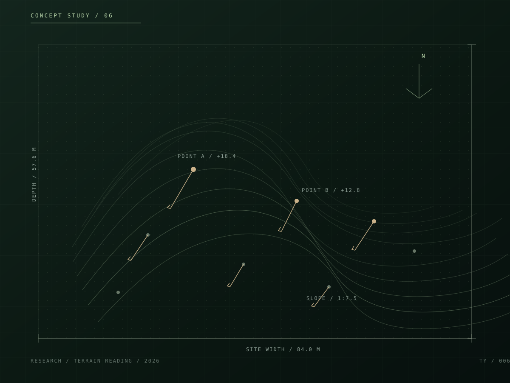

概念占位石庭与静水
以低墙、树影和水面组织一个安静的内向庭院。
这里展示经过筛选的庭院、景观、建筑和设计研究。当前影像为本地概念占位图， 用于建立浏览与筛选体验，不冒充已完成项目。
筛选只改变当前页面的可见作品，不请求服务器。
当前显示 6 个示例作品（全部）。

概念占位以低墙、树影和水面组织一个安静的内向庭院。

概念占位用浅水面和连续汀步建立室内外的缓慢过渡。

概念占位把坡地高差转译成可停留、可观察的层叠空间。

概念占位以疏密变化的树阵建立进入林地的感知边界。

概念占位用连续屋檐压低视线，让庭院成为建筑的主要立面。

概念占位把等高线、坡向和视点标注组合成可比较的场地语言。
当前作品名称为内容结构示例。替换流程与图片尺寸说明见项目 README。